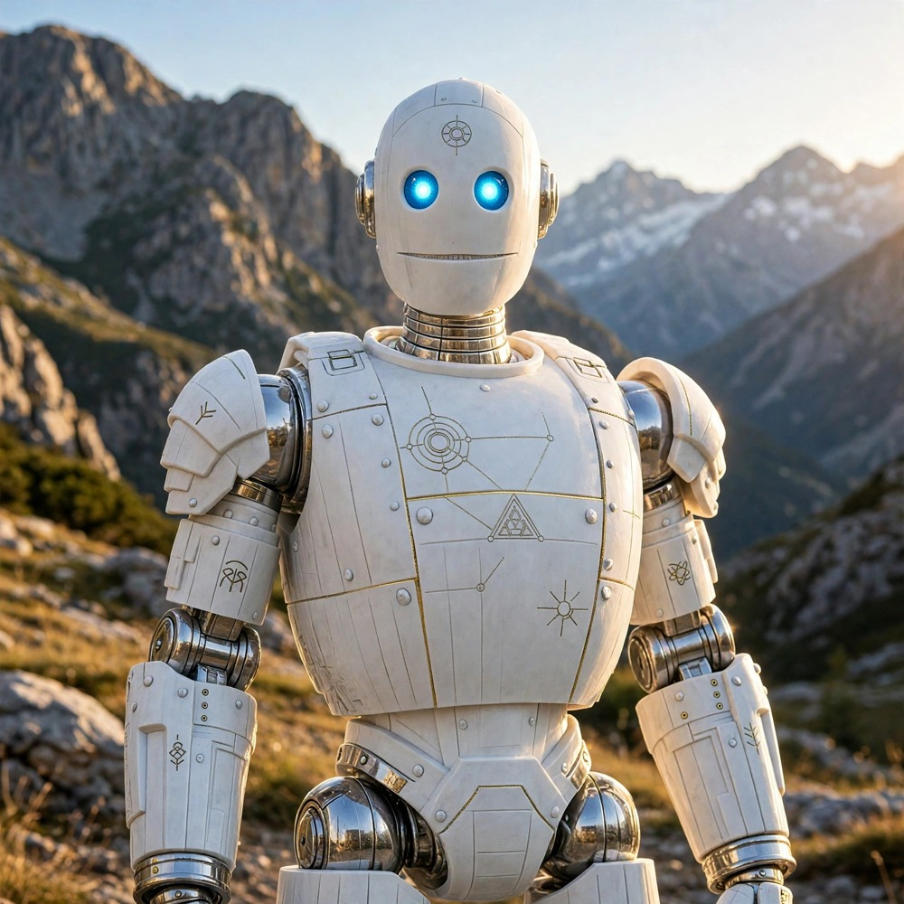

Strider
George, the human, using Strider, my Muse AI assistant. Miami, FL
Glitch StudioFree browser glitch photo editor — Mirror, Kaleidoscope, Datamosh-style, Effects, Overlay, Color Ride checkFree motorcycle ride weather — verdict, next 6 hours, wet-road warnings, ride timer, checklists Field KitOffline-first checklists, notes, conditions log, and moon phase for rides, hikes, and field work. No signup, no upload. Prompt PlaybookFive reusable prompt templates with complexity tiers, tap-to-copy, and a place to save your own prompts. Sound Lab16-step beat maker with genre patterns, sidechain, and song mode. No signup, no upload, sounds made in your browser.